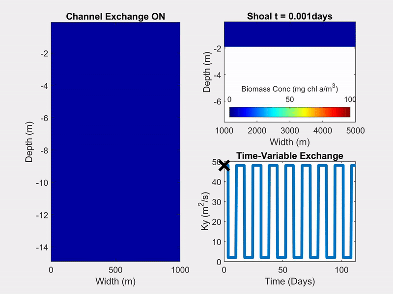

We assess the environmental impacts of offshore wind farm development off the East Coast of the United States on commercial fisheries of Atlantic sea scallop,
Atlantic surfclam, and black sea bass. The presence of large numbers of offshore wind farms along the continental shelf may lead to changes in ocean circulation and thus larval dispersal.
Preliminary model outputs suggest that larval dispersal is influenced by offshore wind development; however, due to circulation patterns, the distribution of the effects is neither uniform nor universally negative.
Georgas N, Garavelli L, Codiga D, Day E, Engel L, Hemery L, Misa W, Monim M, Moghadam H, Morandi A, Ilia A, Speers J, Tajallibakhsh T (RPS Ocean Science, South Kingston, RI, and Pacific Northwest National Laboratory, Seattle, WA). 2025. Offshore wind impact on oceanographic processes: North Carolina to New York, Volume 1 - RPS. Sterling (VA): U.S. Department of the Interior, Bureau of Ocean Energy Management. 360 p. Obligation No.: 140M0123C0001. Report No.: BOEM 2025-016. https://espis.boem.gov/final%20reports/BOEM_2025-016.pdf .
Scallop larvae virtually released on May 15th, 2018 on the East Coast of the USA.
Connect-a-Crab: Larval Connectivity for European Green Crab Management in the Salish Sea
In support of a multi-agency effort in response to the European green crab (EGC) invasion of the Salish Sea, the Salish Sea Modeling Center developed a biophysical larval dispersal model that uses information on EGC early life stages dynamics, monitoring data, and outputs of the Salish Sea Model.
The larval dispersal model of EGC is a coupling of the Salish Sea Model with a larval dispersal model Ichthyop (Lett et al. 2008).
The model application and forecasts will inform management action and response planning efforts for EGC in the Salish Sea.
Engel, L., Premathilake L, Barrier N, Khangaonkar T, Garavelli L (2025) Larval connectivity for European green crab management in the Salish Sea and surrounding waters. Mar Ecol Prog Ser 754:77-92. https://doi.org/10.3354/meps14778 .
Sample model run of the EGC virtually releaseed on April 1, 2020.
The Peter-Parker Model
The Peter-Parker Model is a new biophysical model I developed during my PhD which combines a Total Exchange Flow TEF box model first developed by Parker MacCready with a
Nutrient-Phytoplankton-Zooplankton-Detritus (NPZD) model, the likes of which were first developed by Peter J.S. Franks. Github repository: lmengel422/The-Peter-Parker-Model.
The Peter-Parker Model is a combination of two box models. Also, Peter Parker is the name of spiderman.
The Peter-Parker Model vs The Sandman (settling detritus vs settling tracer)
Using timescales, we investigated how the interaction between exchange flow and particle sinking leads to Estuarine Turbidity Maxima by modeling a sinking tracer in an idealized box model of the Total Exchange Flow (TEF).
We then focus on the role of ecology in ETM formation through the use of The Peter-Parker Model focusing on the sinking detritus term.
Engel, L.; Stacey, M. Timescales of Ecological Processes, Settling, and Estuarine Transport to Create Estuarine Turbidity Maxima: An Application of the Peter–Parker Model. Water 2024, 16, 2084. https://doi.org/10.3390/w16152084
NPZD concentrations in the shallow layer of an estuary over time as solved by the Peter-Parker Model.
The Peter-Parker Model vs Nutrient Loading
Sensitivity analysis of biological and physical parameters in the Peter-Parker Model to see their influence on phytoplankton bloom development. In prep.
Channel-Shoal Interactions
We investigated how intermittency in channel-shoal exchange affects phytoplankton blooms using a two water columns biophysical model representing San Francisco Bay. Github repository: lmengel422/Channel-Shoal-Public
Engel, L., Lucas, L. & Stacey, M. The Role of Spring-Neap Phasing of Intermittent Lateral Exchange in the Ecosystem of a Channel-Shoal Estuary. Estuaries and Coasts 48, 22 (2025). https://doi.org/10.1007/s12237-024-01434-8

Biomass concentrations in the channel and shoal with different time-variable ecxhange.